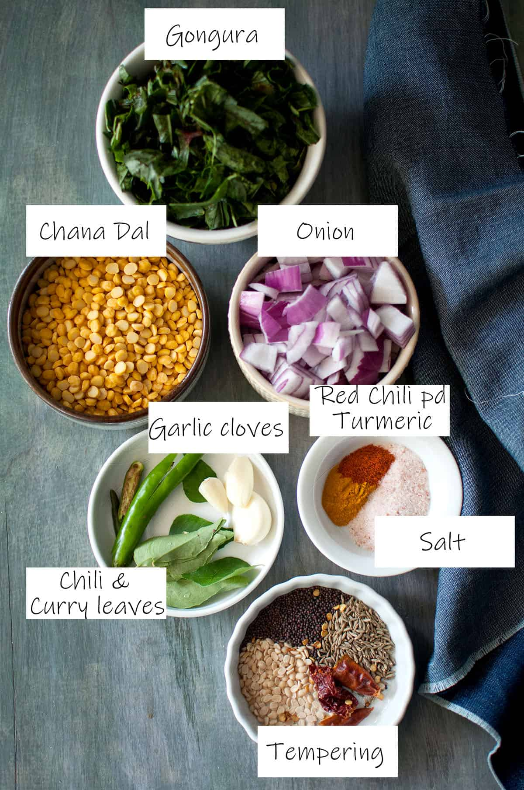
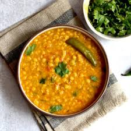

Puntikura Chana Dal

Ingredients:
- Puntikura (Indian spinach) - 2 cups (cleaned and chopped)
- Chana dal (Bengal gram) - 1/2 cup
- Onion - 1 medium (chopped)
- Tomato - 1 large (chopped)
- Green chilies - 2 to 3 (slit lengthwise)
- Ginger-garlic paste - 1 tablespoon
- Turmeric powder - 1/2 teaspoon
- Red chili powder - 1 teaspoon
- Coriander powder - 1 teaspoon
- Garam masala powder - 1/2 teaspoon
- Mustard seeds - 1/2 teaspoon
- Cumin seeds - 1/2 teaspoon
- Asafoetida (hing) - a pinch
- Curry leaves - a few
- Oil - 2 tablespoons
- Salt - to taste
- Water - as required
 Recipe:
- Wash and soak chana dal in water for about 30 minutes.
- Pressure cook the soaked chana dal with turmeric powder, salt, and enough water until soft.
- Heat oil in a pan, add mustard seeds and cumin seeds. Let them splutter.
- Add chopped onion, slit green chilies, and curry leaves. Sauté until onions turn golden brown.
- Add ginger-garlic paste and sauté until the raw smell disappears.
- Add chopped tomato and cook until it becomes soft and mushy.
- Add turmeric powder, red chili powder, coriander powder, garam masala powder, and a pinch of asafoetida. Mix well.
- Add chopped puntikura and mix well. Cook until the puntikura wilts and becomes soft.
- Add cooked chana dal along with water and mix well.
- Simmer for a few minutes until the flavors blend together and the curry thickens.
- Adjust the consistency by adding more water if required.
- Puntikura Chana Dal is ready to serve. Serve hot with rice or roti.
- Enjoy the nutritious and flavorful Puntikura Chana Dal!